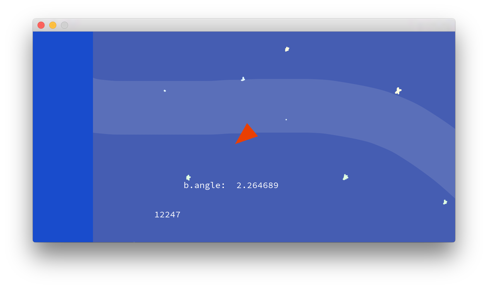
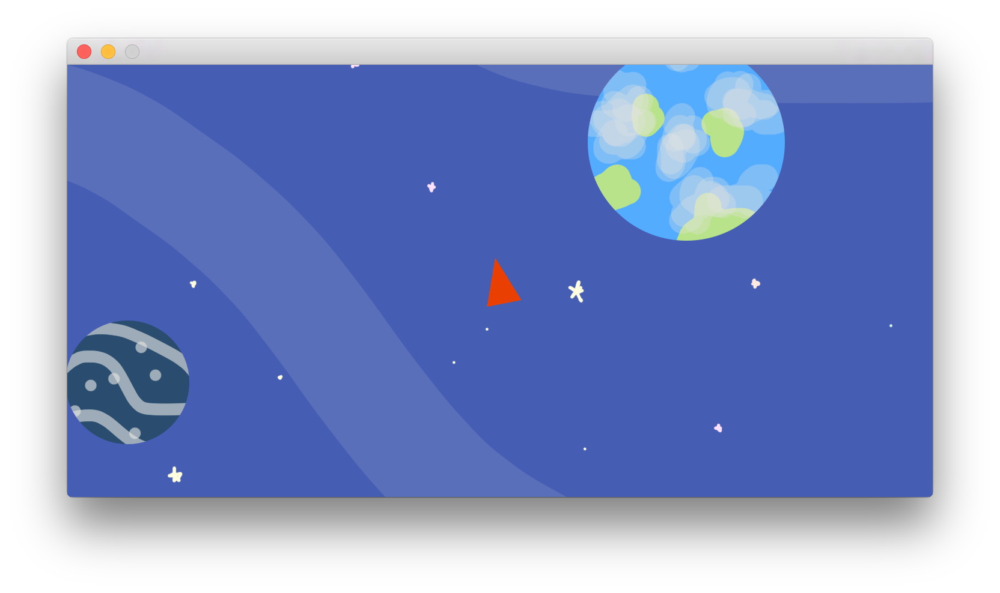
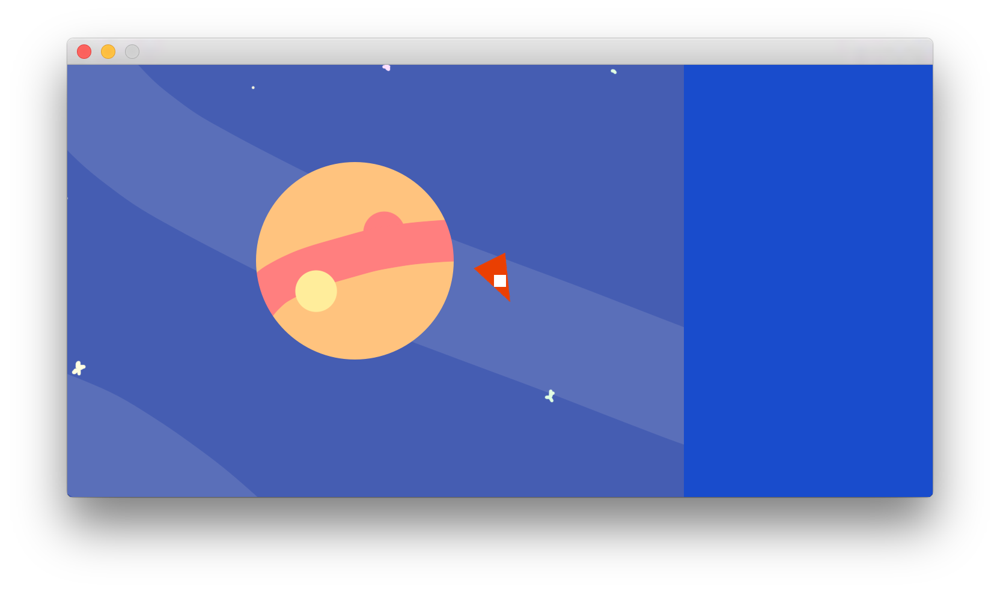

Week 6 - Started Prototyping
When prototyping there were a number of issues I struggled with. Firstly, it was I found it difficult to detach myself from the mentality of writing good code to just writing code whose purpose was only to answer a question e.g. How does one control scheme favour against another.
When trying out the control scheme of tapping the left side to go left and tapping the right side to go right, some team members found it to be clunky and difficult to control. However, I feel like the idea still has potential and through tweaking and modifications something fun can be derived. This is one limitation I have found with prototypes. Prototypes tend to be heavily constrained as their purpose is to quickly test out ideas, this can however, lead to the prototype not fully conveying the idea as originally intended.
See below for some screenshots of the prototype I have been working on
  We also as a team feel that if everyone is working on the design of the game at once it leads to a mess. We have discussed the idea that one person should be in charge of the design and all other members should follow the direction of the designer. Although, this may mean that if members are not having a say in the design of the game that they feel less motivated to work on it.
WEEK 7